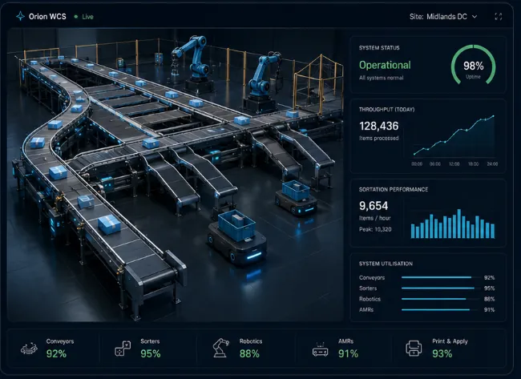

What actually drives the price
Two automation projects with the same headline description can land six figures apart. Five variables do most of the work:
- Throughput. Parcels or cases per hour sets the size of everything — sorter length, conveyor widths, motor counts, induction design. Doubling throughput rarely doubles cost, but it is the single biggest lever.
- Destination count. Every sort destination is a divert, a chute and controls I/O. Sixteen destinations and sixty are very different machines, even at the same hourly rate.
- Integration. Connecting to your WMS, carrier systems and existing equipment ranges from a simple data feed to a full interface programme. Scope it early — it is the classic source of quote drift.
- Controls and WCS scope. Routing logic, dashboards, alarming and reporting are real engineering. With Orion the WCS is included as standard with Helix rather than sold as a separate licence, which removes one of the larger soft-cost lines.
- Install conditions. Floor quality, building height, live-operation constraints and access all shape install cost. Orion systems are designed to go into existing buildings — no extensions, no planning permission.

A worked example: 9,000 parcels/hour, 16 destinations
This is a real scenario from the Orion ROI engine: a parcel operation running two 10-hour shifts, seven days a week, sorting 9,000 parcels per hour into 16 destinations with 12 manual sorters on the wall.
| Indicative system cost | £320,900 one-off — or ~£6,500/month on 60-month finance |
| Operators removed | 10 of the 12 manual sort positions |
| Labour saving | ~£1.1m per year at £16.30/hour all-in |
| Payback | ~4 months against the labour removed |
And the assumptions behind it, in full — because a payback number without assumptions is marketing, not engineering:
- Shift pattern: 2 × 10-hour shifts, 7 days a week, 50 weeks a year
- Labour rate: £16.30/hour all-in — National Living Wage plus employer National Insurance at 15%, pension at 3% and holiday cover
- Finance: 60-month term at 8% APR
- Maintenance: £12,000 per year budgeted
Change the assumptions and the answer changes — that is the point. A single-shift operation removing four operators gets a very different payback from a two-shift operation removing ten. Run the ROI calculator with your own shift pattern and labour bill before you believe anyone's payback claim, including ours.
CAPEX or monthly: fund it against the labour line
There are two ways to pay for the system above. Write a cheque for £320,900, or pay roughly £6,500 a month for five years and own the asset at the end. The interesting comparison is not between those two numbers — it is between either of them and the labour spend you already have. Ten operators at £16.30 an hour on that shift pattern cost around £1.1m a year, roughly £92,000 a month. The finance payment is about 7% of that. Viewed that way, the system is not a new cost: it is a cheaper way of buying capacity you are already paying for, every month, in wages.
That is why most Orion customers finance: the payment displaces existing operating spend from month one, the cash stays in the business, and the capital allowances position is typically no worse than an outright purchase. The full 22-reason case — cash flow, tax treatment, deployment speed — is laid out in Why finance, with routes and structures on the finance page. Entry systems are typically from £4,000 per month, subject to specification and approval.
The labour side: what a sorter really costs per hour
Automation business cases in the UK routinely understate labour cost by quoting base wage. The £16.30/hour figure in the example above is the all-in rate: National Living Wage, plus employer National Insurance at 15%, plus 3% pension contribution, plus the cost of covering holiday. That is the number your finance director recognises — and it still excludes recruitment fees, agency premiums at peak, absence cover and the management time spent backfilling a role that turns over every few months. One sort position, staffed across two 10-hour shifts, seven days a week, costs north of £110,000 a year before any of those extras. Multiply by the positions on your sort wall and the automation quote usually stops looking expensive.
How long does installation take?
Timelines are shorter than most buyers expect, because the long pole is manufacturing, not site work. Conveyor packages typically reach site in 6–10 weeks. A full Helix sortation system runs 12–25 weeks order-to-live depending on scale — with under 4 weeks of that on site, because systems are built and tested at our Chichester facility before they ship. Nothing Orion installs needs a building extension or planning permission, and mechanical, electrical, PLC, WCS and support all come from one in-house UK team, which is what keeps interface risk — and interface cost — down.
The costs buyers forget
Four lines that should be in every automation budget, and how we handle each:
- Spares. A sorter that is down for want of a £200 part is an expensive sorter. Agree a critical spares holding at handover. Helix's 200mm cassette modules cut the depth of spares you need to hold — one module type covers the sort run, and a swap takes 15 minutes without specialist tools.
- Maintenance. Budget it from day one — £12,000 a year in the worked example above — rather than discovering it in year two. Orion systems carry a 24-month warranty, and planned maintenance can be built into the monthly finance figure so it never arrives as a surprise invoice.
- Training. Operators and first-line maintenance need to be competent before the install team leaves, not after. Orion includes operator and first-line training in the commissioning scope — because a system your own team can clear and restart is worth more than one that needs a call-out.
- Downtime during install. The quiet cost: sortation you cannot do while the system goes in. Orion's answer is to move the work off your site — systems are built and proven in Chichester before shipping, on-site time is kept under 4 weeks, and installs are phased around your live operation and peak calendar.
If you are comparing sortation technologies as well as prices, our companion guide — cross-belt vs tilt-tray vs wheel sorters — covers which machine fits which operation. Sector-specific pages for parcel centres, 3PLs, fulfilment and food manufacturing show what the kit looks like in context, and the full product range runs from conveyors to ASRS.